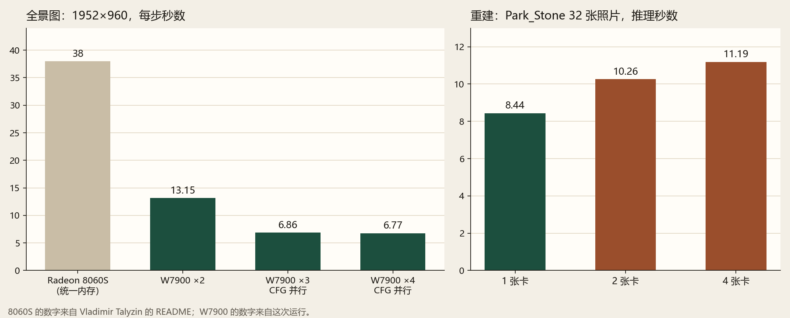
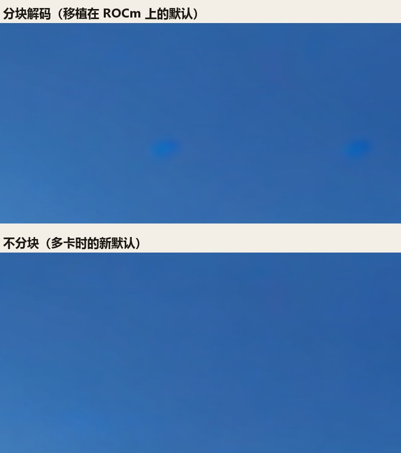

HY-World 2.0 · 2026.11.26
【一卡一世界】这回一张卡装不下：HY-World 2.0 把一张照片变成能走进去的 3D 世界 | arXiv HY-World 2.0技术报告复现笔记



这一年的世界模型，大多在拍电影。给一张图、一句话，模型往下生成一段视频，镜头能推、能转，看起来像走进了那个世界。可电影放完就没了：想回头看看刚才那扇门，模型得重新画一遍，画出来的门未必还是那扇门；想让角色撞上墙停下，视频里没有墙，只有像素。
腾讯混元的 HY-World 2.0 换了一个问题：与其拍一部能看的电影，不如盖一栋能进的房子。它的输出不是视频，而是网格和 3D 高斯（3DGS）这样的 3D 资产，可以直接拖进 Blender、Unity、Unreal 或 Isaac Sim，用消费级显卡实时渲染，想看多久看多久。技术报告 2026 年 4 月发布（arXiv 2604.14268），各部分的权重和推理代码随后陆续开源。
这一篇讲 HY-World 2.0 怎么把一张照片变成一个世界，以及把它请上 W7900 时发生的事：重建一张卡就够，4 秒出结果；全景图生成却要 59 GiB，这个系列第一次遇到一张 48 GB 的卡装不下的世界。
电影和房子
项目的 README 一上来就把账摆了出来。视频世界模型（Genie 3、Cosmos，还有混元自己的 HY-World 1.5）输出的是像素：能玩的时长有限，通常一分钟上下；视角一变，细节就闪烁、漂移；每多交互一下，就要多推理一次，成本一直往上累；角色控制不精确，也没有真的物理碰撞。3D 世界模型反过来：资产生成一次，之后渲染的成本几乎是零；3D 一致性是天生的，因为根本只有一份几何；物理碰撞、光照都交给引擎。
那张对比表的最后一行写得很直白：看完一段视频，它就没了；盖好一个世界，它就一直在。
当然，房子也有房子的难处。视频模型只需要每一帧好看；3D 世界要求从任何角度看都对得上，被挡住的地方也得有东西。一张照片只拍到了世界的一面，其余的全靠模型去猜，还得猜得前后一致。HY-World 2.0 的办法是把这件事拆成四段流水线，每段只解决一个问题。
第一段：先画一张全景图
第一步是 HY-Pano 2.0：给一张照片或一句话，生成一张 360° 全景图。
先画全景图，是个很聪明的顺序。一张等距柱状投影的全景图，一次就定下了相机周围一整圈的样子：天空在哪、地平线多高、身后是什么。后面的步骤都在这张图的基础上往外扩，不会出现往左转一圈回来，房间换了布局的尴尬。
HY-Pano 2.0 有两个版本。完整版基于 HunyuanImage-3.0，约 800 亿参数；开源的轻量版是挂在 Qwen-Image-Edit-2509 上的一块 LoRA，约 4.25 亿参数。这次跑的是后者。轻量是对 LoRA 而言的：它底下的 Qwen-Image-Edit 底座在 bf16 下就有 54 GB。
第二段：决定往哪走
全景图只是站在原地看到的世界。要让人走进去，得知道往哪走、走过去会看到什么。第二步 WorldNav 做轨迹规划：由视觉语言模型引导方向，用 Recast 的导航网格避开障碍物，规划相机路线。它管的是一个很实际的问题：镜头往哪儿推，才能看见原图里被挡住的部分，又不会一头撞进墙里。
第三段：沿着路线补世界
第三步 WorldStereo 2.0（约 170 亿参数）沿着规划好的轨迹生成关键帧：相机往前走，原来被挡住的地方要补出来，已经出现过的东西要保持原样。它带着一套记忆机制，生成新视角时回头参考已有的内容，保证走远了再回头，看到的还是同一个世界。
报告里的数字说明了这一步进步在哪。相机控制上，WorldStereo 2.0 的旋转误差 0.492，上一代 WorldStereo 是 0.762，SEVA 是 1.690，Gen3C 是 0.944。更关键的是生成的视频能不能重建成好的 3D：只给一张图，生成视频再重建，Tanks-and-Temples 上的 F1 是 41.43，SEVA、Gen3C、Lyra 在 31 到 37 之间，FlashWorld 是 22.29；MipNeRF360 上是 51.27，第二名 FlashWorld 42.60。对 3D 世界模型来说，这才是真正的考题：画得好看不够，要能被拼成一个自洽的立体世界。
第四段：把一切拼成 3D
最后一步把全景图和生成的关键帧拼成真正的 3D 世界：先用 WorldMirror 2.0 从这些图里恢复深度、法线和相机位姿，再训练 3D 高斯，导出成能在引擎里实时渲染的资产。
WorldMirror 2.0 值得单独说，因为它同时是 HY-World 2.0 的第二项核心能力：世界重建。给它几张照片或一段随手拍的视频，它一次前向就同时预测深度图、表面法线、相机参数、三维点云和 3DGS 的属性，不用逐场景优化。约 12 亿参数，支持 5 万到 50 万像素的灵活分辨率。
报告里最有意思的是两组数。一组是先验：如果手头有相机内外参或深度这类先验，可以注入进去。在 7-Scenes 上，中等分辨率的精度误差从 0.033 降到 0.013，差不多降了六成。另一组是分辨率：上一代 WorldMirror 1.0 在高分辨率下反而变差，7-Scenes 上的误差从中分辨率的 0.043 涨到 0.079，DTU 上从 1.017 涨到 2.271。2.0 版不再塌：7-Scenes 上高分辨率是 0.037，和中分辨率的 0.033 相差无几；DTU 上反而从 1.005 降到 0.845。
“给更多像素，结果反而变差”是很多前馈重建模型的老毛病：训练时见的分辨率有限，推理时一放大就出了分布。2.0 基本治好了这个毛病，这比任何一个排行榜数字都更说明它能用在真实照片上。
一位社区开发者，先替我们走了一半
HY-World 2.0 官方推荐的环境是 CUDA 12.8，FlashAttention 3 要 Hopper。在 AMD 卡上跑它，第一个吃螃蟹的是社区开发者 Vladimir Talyzin。他的 hy-world-2.0-mac-rocm 把整套东西搬到了 ROCm 和苹果的 Metal 上，参考机器是一台 Radeon 8060S，也就是 Ryzen AI Max+ 395 “Strix Halo” 里的集成显卡，Windows 11，AMD 官方都没把它列进支持名单。
他的移植笔记读起来很过瘾。FlashAttention 在代码里是硬导入，没有就直接崩；ROCm 上的 SDPA 会悄悄退回最慢的数学后端；gsplat 是 CUDA 扩展，没有 ROCm 版本，他自己编了出来。最精彩的是全景图那一段：Qwen 的 VAE 是三维因果卷积的视频 VAE，MIOpen 在某些 Conv3d 形状上会掉下性能悬崖，一层卷积跑几分钟。他把单帧图像上的 Conv3d 折叠成 Conv2d，再给解码开分块，绕了过去。还有一个只有 Strix Halo 用户才懂的坑：128 GB 内存在 BIOS 里切成显存和系统内存两块，默认切法会让 54 GB 的底座落进页面文件，每一步都像卡死。最后在 8060S 上，1952×960、40 步的全景图大约 25 分钟，平均每步 38 秒。
这次的工作，就站在他的肩膀上：同一份代码，从一颗集成显卡搬到几张独立的 W7900D 上。
W7900 上，重建一张卡就够
这次用的是 W7900D（gfx1100，48 GB），系统是 ROCm 7.2.4 的运行时。第一个坑和显卡无关：移植自带的安装脚本会给 gfx1100 装 pytorch.org 的 ROCm 6.4 轮子，它们在 7.x 的运行时上直接段错误，换成 ROCm 7.2 的官方源才好。第二个坑在依赖：requirements 允许 diffusers 0.36 及以上，pip 装上了 0.39，而 0.39 刚好删掉了 Qwen 图像 Transformer 前向里的 txt_seq_lens 参数，全景图跑到第一步去噪就报错。钉回 0.36.0。软件栈的地基，往往是被这种小版本号挖空的。
重建这一路很顺。自检脚本报告 gfx1100、bf16、AOTriton 的 SDPA 都正常。WorldMirror 2.0 跑自带的 Desk 场景，两张照片，模型加载 11.3 秒，推理 4.05 秒，体素剪枝后留下 334,365 个高斯。
接着试了多卡。WorldMirror 支持用 torchrun 做序列并行，把多张输入视图分到几张卡上。32 张照片的 Park_Stone 场景，一张卡推理 8.44 秒，两张 10.26 秒，四张 11.19 秒，卡越多越慢。原因不复杂：每张卡都放着一整份 12 亿参数的模型，显存几乎没省；视图之间又要通过 PCIe 交换特征，通信的账比分摊的账大。重建就老老实实用一张卡。
全景图：一张卡装不下的世界
全景图是这个系列第一次碰到的情况：一张 48 GB 的卡装不下。带上 LoRA，Transformer 一份就是 38.8 GiB，1952×960 下它所在的卡峰值 40.1 GiB；文本编码器和 VAE 另要 18.7 GiB。加起来约 59 GiB。在 Strix Halo 上这不是问题，那里的显存和内存是一家，128 GB 统一内存一起用；独立显卡就得做选择题：要么把模型卸到 CPU 内存里来回搬，要么多用几张卡。
这次选了多卡，在 panogen 管道里加了一个 gpus 参数。两张卡时，文本编码器和 VAE 放 0 号卡，Transformer 按块切到 1 号卡上，用 accelerate 的钩子在卡之间搬激活。这里有个 diffusers 的小脾气：切分必须在加载 LoRA 之后做，因为 diffusers 加载 LoRA 时看到 accelerate 的钩子，会以为你开了 CPU 卸载，顺手把卸载又打开。两张卡，每步 13.15 秒，生成一张图 526 秒。
第三张卡的用法更有意思。全景图用的是真 CFG：每一步去噪，模型要跑两遍，一遍带提示词，一遍不带，再按引导强度混合。两遍互不依赖，本来就可以同时算。于是第三张卡上放一份 Transformer 的副本，一个工作线程在副本上跑不带提示词的那一遍，主副本同时跑带提示词的那一遍。每步从 13.15 秒降到 6.86 秒，几乎正好减半。两卡和四卡的输出逐字节相同，SHA-256 一模一样：并行改变了时间，没改变结果。第四张卡没用，在这个布局里，它多不出活来。
和 8060S 的每步 38 秒比，三张 W7900 是 6.86 秒。这不是说集成显卡不好：它用一颗芯片、一份统一内存，把一个 59 GiB 的模型跑通了。独立卡的优势在于可以并排放：同一个模型两遍互不依赖的计算，正好对应两张卡。
天上的蓝点
多卡跑通以后，还发现了一个在小图上看不出的问题。用移植默认的分块解码，生成的全景图里，平坦的蓝天上有一排排很规则的小蓝点，像有人在天上按格子点了墨。关掉分块，蓝点就没了。
分块解码是移植在 ROCm 上的默认值，在 Strix Halo 上有它的道理：统一内存吃紧，分块能压住解码的峰值。到了独立卡上，VAE 本来就独占一张卡，不分块的解码峰值 24.9 GiB，放得下。所以在多卡模式下，把分块默认关掉。
这个小插曲很能说明移植这件事：一个默认值在原来的平台上是对的，换到另一种硬件上就未必。默认值里写着它出生的那台机器。
这次验证了什么
验证到的是这几件事：WorldMirror 2.0 的世界重建在一张 W7900 上跑通，4 秒推理；HY-Pano 2.0 的轻量版全景图在两到三张 W7900 上跑通，三张卡每步 6.86 秒，并行前后的结果逐字节一致。没有验证的也写清楚：gsplat 没编，所以重建后的漫游视频没有渲染；WorldStereo 2.0 的世界扩展和完整的四段生成流水线没有跑；800 亿参数的 HunyuanImage-3.0 全景后端也没跑。
还有许可证。HY-World 2.0 用的是腾讯自己的社区许可证，地域条款排除了欧盟、英国和韩国，也不许用它的输出去改进其他 AI 模型。仓库保留了腾讯的许可证、Notice 文件和 Vladimir 的 MIT 许可证，两个改动过的文件顶部都写了改动说明。这个移植和腾讯、和 Vladimir 都没有隶属关系。
这个系列叫“一卡一世界”，这回破了例：重建一张卡，全景图要三张。不过这也算一个发现：世界模型越像真的世界，就越不肯挤在一张卡里。